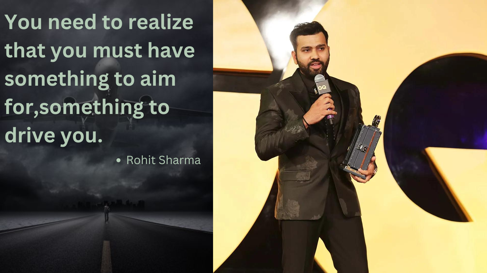
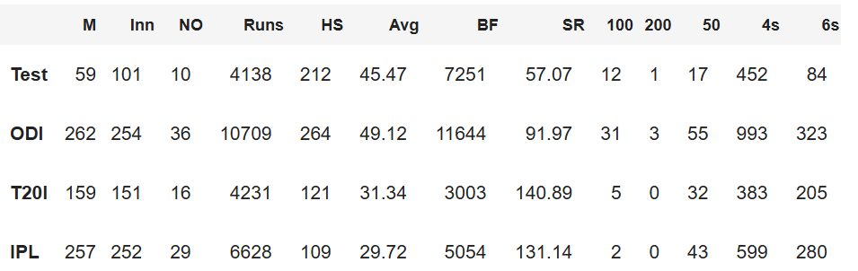
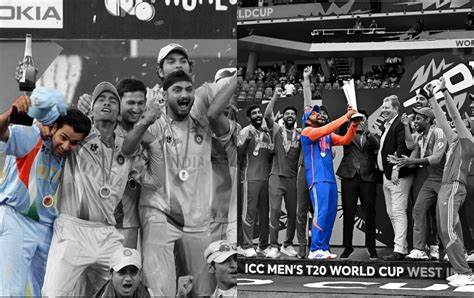
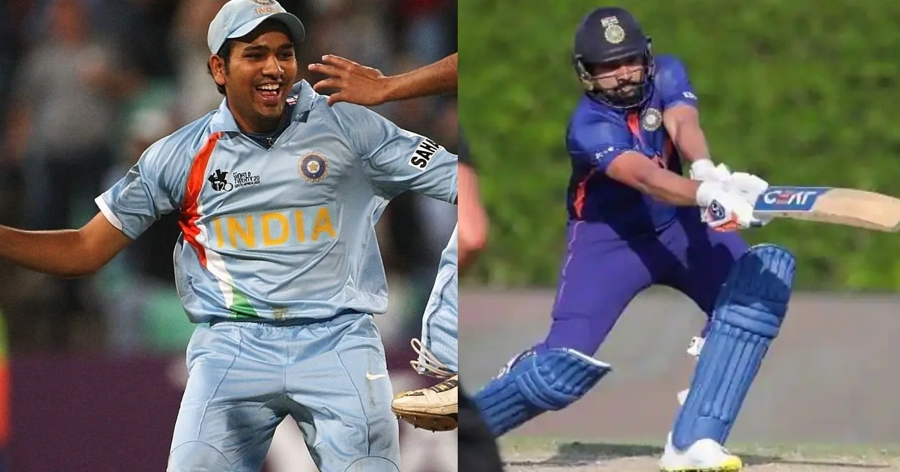

ROHIT GURUNATH SHARMA
INDIAN CAPTIAN

Rohit Sharma was born on April 30, 1987, in Nagpur, Maharashtra, India.
Rohit Gurunath Sharma grew up in a modest family. His father, Gurunath Sharma, worked as a caretaker in a
transport firm storehouse, while his mother, Purnima Sharma, is a homemaker. Due to financial constraints,
Rohit spent his early years with his grandparents and uncles in Borivali, a suburb of Mumbai.
Rohit's passion for cricket was evident from a young age. He started playing cricket in the streets and
local grounds of Borivali. Recognizing his talent, his uncles enrolled him in a cricket camp in 1999. It was
at this camp that his potential was first spotted by Dinesh Lad, a cricket coach and the father of his
schoolmate, who later became his mentor. Dinesh Lad saw the raw talent in Rohit and insisted that he switch
schools to Swami Vivekanand International School, where Lad was a coach, to receive better training and
facilities. This move proved to be pivotal in Rohit’s cricketing journey.
Rohit Sharma initially started as an off-spinner who could bat a bit, but under the guidance of Dinesh Lad,
his batting skills flourished. He soon made a mark in the school cricket circuit, and his performances in
the Harris and Giles Shield school cricket tournaments caught the attention of selectors. His talent was
undeniable, and he was soon on his way to becoming one of the brightest young cricketers in India.
Rohit made his List A debut for West Zone against Central Zone in the Deodhar Trophy in March 2005. His
consistent performances at the domestic level earned him a place in the India A squad and eventually led to
his international debut for India in an ODI against Ireland in June 2007.
From these humble beginnings, Rohit Sharma's journey to becoming one of the most prolific batsmen in
international cricket is a testament to his hard work, dedication, and unyielding passion for the game.

ODI Records
-
Rohit Sharma’s highest individual score in an ODI is 264. So far, this is the highest individual score by a player in the ODI format.
-
Rohit Sharma is the only batsman to have three double centuries in ODIs.
-
Rohit holds the record for the most fours (33) scored in an ODI inning.
-
Rohit has hit the second-most sixes in an ODI innings (16), trailing only Eoin Morgan’s record (17).
-
He is the fastest Indian opener (83 innings) and the world’s second-fastest opener (after Hashim Amla) to score 4,000 ODI runs.
-
He is the fastest Indian opener and the world’s second-fastest opener to reach 5,000 ODI runs. Hashim Amla achieved this record in 100 innings, while Rohit required 102 innings.
-
Rohit Sharma is the only batsman to have the most 150+ scores in ODIs (8), beating the records of David Warner and Sachin Tendulkar.
-
He is India’s third-highest ODI century scorer after Sachin and Virat Kohli.
-
He is the only batsman to have scored the most centuries in a single edition of the Cricket World Cup. Rohit smashed 5 centuries in the 2019 edition.
-
Rohit Sharma accomplished a significant milestone in his ODI career as he reached 10,000 runs in ODIs in September 2023. He became the second-fastest to achieve the mark in 241 innings.
T20I Records
-
Sharma has the third-highest score by an Indian player in the T20I format (118 runs).
-
After Suresh Raina, Rohit became the second Indian to score a century in all three formats of international cricket.
-
Rohit Sharma is the only Indian skipper to record a T20I century.
-
Rohit owns the record for the most sixes struck in T20Is.
-
He became the world’s first and only batsman to score four T20I hundreds.
TEST Records
-
It was the same series in which Sachin Tendulkar announced his retirement. Sharma made his Test debut at Kolkata’s Eden Gardens. On his debut, he scored 177 runs.
-
Rohit had the second-best debut score by an Indian, trailing only Shikhar Dhawan.
-
Sharma became the first batter to achieve two centuries in his first Test as an opener, smashing 176 and 127.
-
Sharma becomes the third Indian cricketer to make back-to-back centuries in the first two tests, following Sourav Ganguly in England in 1996 and Mohammad Azharuddin in 1984.
-
On September 4, 2021, Rohit Sharma recorded his first away century against England, which was his eighth Test century.
IPL Records
-
Rohit Sharma is currently one of four players who have achieved 6,000 career runs in IPL.
-
Rohit is regarded as one of the most successful captains, having won five IPL titles with the Mumbai Indians (MI).
-
For MI, Rohit has more 400-plus run seasons than any other batter. He has broken the barrier five times, amassing 433 runs in 2012, 538 runs in 2013, 482 runs in 2015, 489 runs in 2016, and 405 runs in 2019.
-
In the history of the IPL, Rohit has had seven seasons with 400 or more runs.
-
Rohit has scored the most half-centuries for MI.
-
Aside from his batting record, Rohit Sharma has been a solid fielder for MI. In the IPL, Rohit has taken the second-most catches as a fielder for Mumbai, trailing behind Kieron Pollard (103), who is the most successful fielder among Mumbai’s players.
-
Rohit Sharma is the only Indian cricketer in the IPL to have achieved a century and a hat-trick. Notably, Rohit scored his first IPL hat-trick against his current team, the Mumbai Indians, in IPL 2009 while playing for the Deccan Chargers.
AWARDS
- Arjuna Award, 2015
- Major Dhyan Chand Khel Ratna Award, 2020
- GQ Sportsman of the Year Award, 2015
- ICC ODI Team of the Year: 2014, 2016, 2017, 2018, and 2019
- ICC ODI Player of the Year: 2019
- Golden Bat Award (Most runs in the 2019 ICC Cricket World Cup)
- Sportsman of the Year by Indian Sports Honours, 2019

